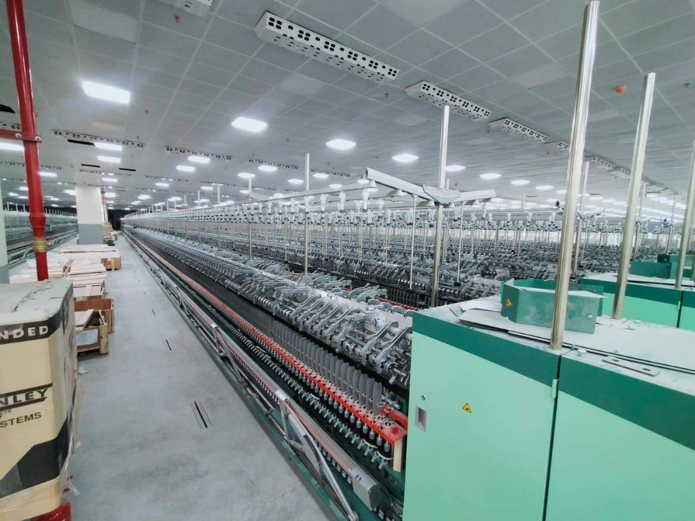
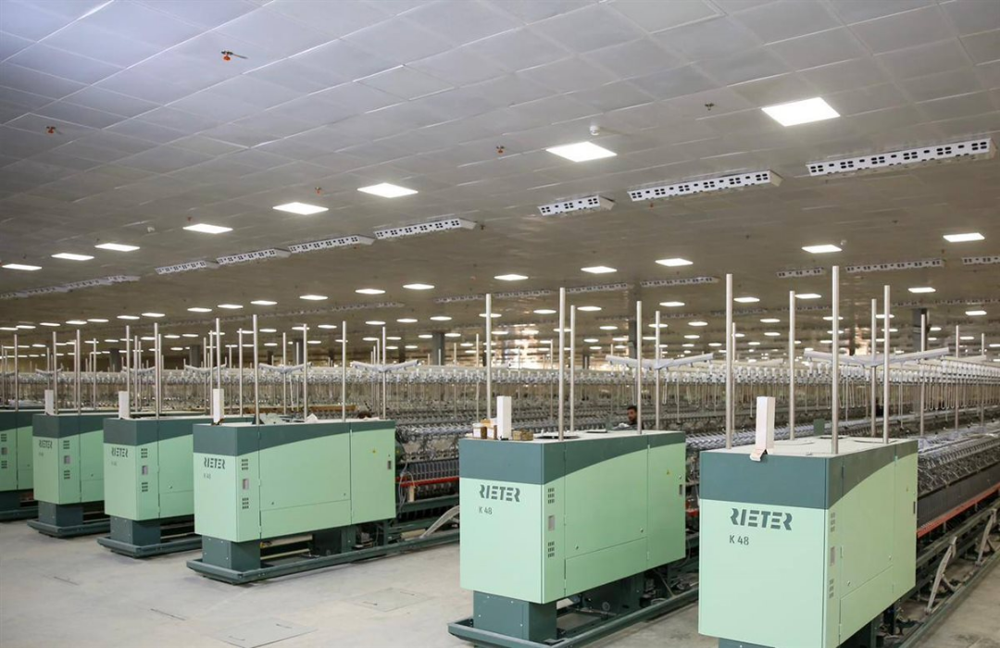

بمجرد أن تطأ قدماك مدينة المحلة الكبرى، تستقبلك أصوات الماكينات التي لم تهدأ منذ عشرات السنين، وتلوح في الأفق مآذن المصانع التي شيدها الاقتصادي الوطني "طلعت حرب". هنا داخل شركة "مصر للغزل والنسيج"، لا تُصنع الملابس فحسب، بل يُصاغ تاريخ أجيال وهبوا حياتهم لهذه الصناعة.
إعادة الميلاد: مشروع التطوير الأكبر
بعد سنوات من الركود التي طالت ماكينات المحلة، تشهد الشركة اليوم أكبر عملية تطوير في تاريخها. المشروع ليس مجرد صيانة، بل هو إعادة ميلاد؛ حيث يتم إنشاء مصنع "غزل 1"، الذي يُصنف كأكبر مصنع للغزل في العالم على مساحة 62 ألف متر مربع، وبطاقة إنتاجية تصل إلى 30 طن غزل يومياً.
"نحن لا نغير الماكينات فقط، نحن نغير التكنولوجيا بالكامل. الماكينات السويسرية والإيطالية الجديدة ستعيد القطن المصري لمكانته العالمية كمنتج نهائي فائق الجودة، وليس كمادة خام فقط."

روح المحلة في عمالها الكادحين
بعيداً عن الأرقام والماكينات الحديثة، تظل روح المحلة في عمالها. في عنابر النسيج، تجد العامل الذي قضى 30 عاماً وسط ضجيج الأنوال، يراقب الخيوط بدقة خبير. بالنسبة لهؤلاء، المصنع ليس مجرد "أكل عيش"، بل هو "بيت كبير".
"المحلة هي اللي علمتنا يعني إيه صناعة. كنا بنحزن لما نشوف مكنة واقفة، والنهاردة واحنا شايفين المصانع الجديدة بتتبني، بنحس إن شبابنا بيرجع تاني. المحلة هي قاطرة مصر، ولو المحلة بخير.. الصناعة في مصر كلها بخير."

تحدي المنافسة العالمية وغزو الأسواق
التحدي الأكبر الذي يواجهه التقرير هو قدرة الشركة على المنافسة في الأسواق العالمية. التطوير الجديد لا يستهدف سد احتياجات السوق المحلي فحسب، بل يطمح لغزو الأسواق الأوروبية بماركة "نيت" (NIT) المصرية، لتعود كلمة Made in Egypt فخراً يرتديه العالم كما كان في السابق.
تظل قلعة المحلة شاهداً على صمود الصناعة المصرية. ومع اقتراب الافتتاح الكلي للمصانع المطورة، يترقب الجميع – عمالاً ومواطنين – أن تعود "المدخنة" لتنفث دخان الأمل في سماء الدلتا، معلنةً انطلاقة جديدة لعملاق الصناعة الذي لا يموت.
القدرة
30 طن إنتاج يومياً
- مصنع "غزل 1" الأكبر في العالم.
- مساحة ضخمة تبلغ 62 ألف متر مربع.
التكنولوجيا
ماكينات سويسرية وإيطالية
- تغيير شامل للمنظومة التكنولوجية.
- إعادة الريادة للقطن المصري عالمياً.
الهدف
المنافسة والتصدير
- إطلاق ماركة "نيت" (NIT) المصرية عالمياً.
- استعادة كلمة Made in Egypt كفخر للعالم.


أترك تعليقاً...